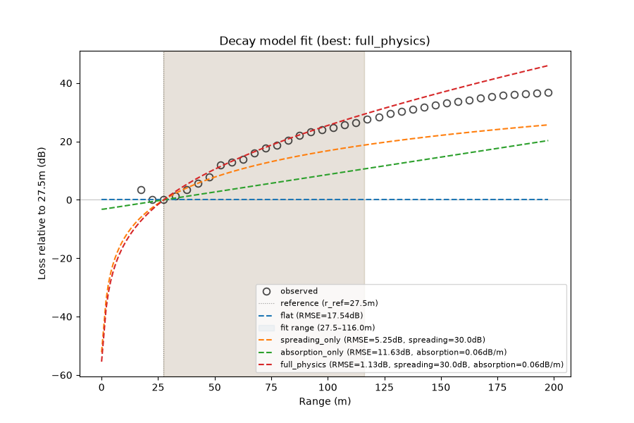
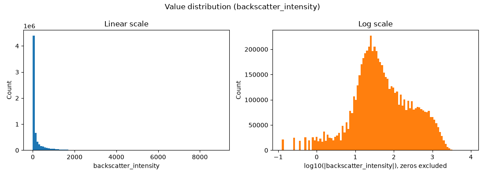
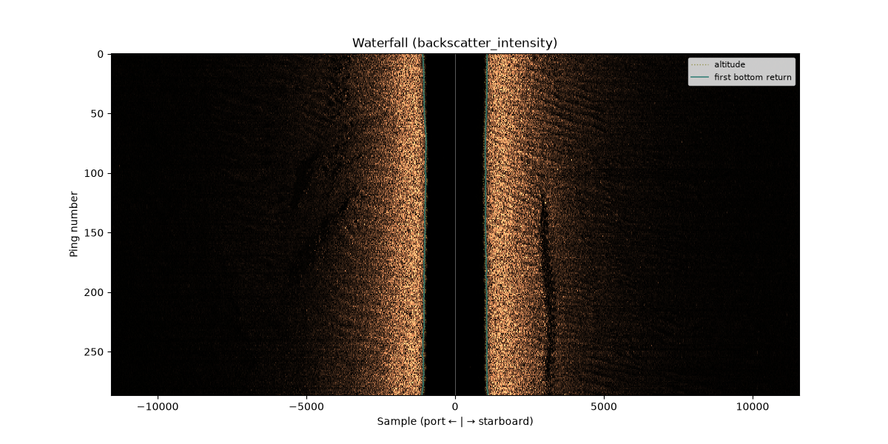
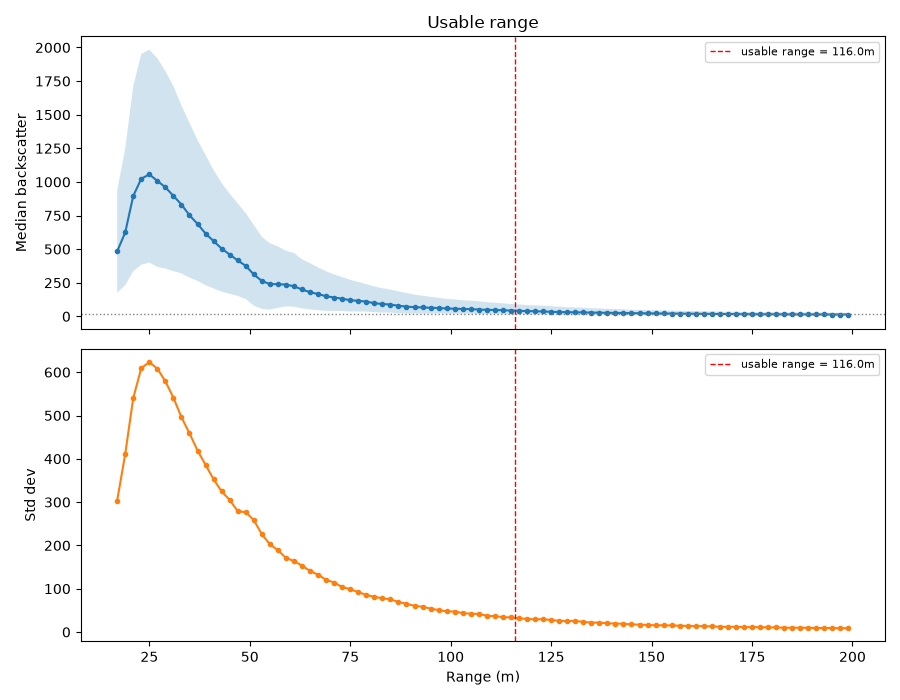

Note
Go to the end to download the full example code.
Investigating an unknown survey#

A survey arrives with no notes. Before choosing corrections, measure
what the recording is: what the samples are, where the seabed starts
under the towfish, how far the sonar sees before the signal sinks into
noise, and whether the recorder already applied a time-varying gain.
Each answer comes from one sidescanpy.analysis function that
returns a result you can print, save and compare between surveys, and
each has a plot in sidescanpy.viz.analysis.
sidescan-analyze investigate runs the same steps from the command
line, and examples/investigate_dataset.py writes them all to a
folder with a metrics.json.
Data: JNCC Wight-Barfleur Reef, EdgeTech JSF, Open Government Licence v3.0 (see Example data).
Usage: python examples/gallery/plot_investigate_a_survey.py [output_dir]
# 2026 rshomberg@uri.edu
import sys
from pathlib import Path
import matplotlib.pyplot as plt
from sidescanpy import analysis, datasets
from sidescanpy.io import read_and_convert
from sidescanpy.log import configure_logging
from sidescanpy.processing import (
altitude_from_bottom_track,
blank_nadir_noise,
compute_geometric_ranges,
)
from sidescanpy.viz import analysis as plots
from sidescanpy.viz.tvg import plot_tvg_fit
out = Path(sys.argv[1]) if len(sys.argv) > 1 else Path(".")
out.mkdir(parents=True, exist_ok=True)
configure_logging("WARNING")
Load both frequencies as recorded: no corrections, the electronic noise burst at nadir zeroed, and slant and ground range added. This file records no altitude, so the bottom track supplies it first.
survey = read_and_convert([datasets.fetch("jncc_wight_barfleur_20130321174522.jsf")], fmt="jsf")
channels = {}
for freq_key in survey.frequencies:
ds = altitude_from_bottom_track(survey.get_frequency(freq_key).dataset.load())
channels[freq_key] = compute_geometric_ranges(blank_nadir_noise(ds))
var = "backscatter_intensity"
ds = channels["hz_218740"]
23:31:58 WARNING sidescanpy.io.jsf.reader: jncc_wight_barfleur_20130321174522.jsf: skipped 910 message(s) of unsupported type(s) (type: count) 2000: 910
23:31:58 WARNING sidescanpy.io.jsf.converter: 1 incomplete ping(s) detected; repair_mode='nan_pad'
23:31:58 WARNING sidescanpy.processing.sample_axis: 287 of 287 pings have invalid sound_vel_ms (NaN or non-positive); falling back to 1500.0 m/s
23:31:58 WARNING sidescanpy.processing.sample_axis: 287 of 287 pings have invalid sound_vel_ms (NaN or non-positive); falling back to 1500.0 m/s
23:31:58 WARNING sidescanpy.processing.sample_axis: 288 of 288 pings have invalid sound_vel_ms (NaN or non-positive); falling back to 1500.0 m/s
23:31:59 WARNING sidescanpy.processing.sample_axis: 288 of 288 pings have invalid sound_vel_ms (NaN or non-positive); falling back to 1500.0 m/s
What are the samples?#
Their type and range, and how many are zero or saturated. On a log scale, linear amplitude spreads over several decades; values already in dB would sit in a narrow band.

ValueSummary(dtype='float32', shape=[287, 2, 11568], n_values=6640032, n_finite=6640032, pct_nan=0.0, minimum=0.0, maximum=8960.0, mean=186.1189727783203, median=40.0, std=352.6227722167969, pct_zero=1.6049922650975177, pct_negative=0.0, notes=[])
Where does the seabed start?#
Under the towfish the sonar hears only water until the first bottom
return. analyze_nadir() finds that boundary
per ping and classifies the nadir region: a clean gap here, the
easy case (a bright spike or noise needs more care). Later steps
exclude everything before it.

{'hz_218740': 'gap', 'hz_521000': 'gap'}
How far does the sonar see?#
The level falls with range until it reaches the noise floor; beyond
that the image holds no seabed.
estimate_usable_range() finds where: the
noise knee, the first range past the near-range peak where the median
level comes within 3 dB of its lowest value. Higher frequencies are
absorbed faster, so the 521 kHz channel sees about half as far as the
219 kHz one.
usable = {
fk: analysis.estimate_usable_range(c, value_var=var, bin_width_m=2.0,
exclude_before_sample=nadirs[fk].first_bottom_return_sample)
for fk, c in channels.items()
}
for fk, u in usable.items():
print(f"{fk}: usable range {u.usable_range_m:.0f} m of {float(channels[fk]['slant_range_m'].max()):.0f} m recorded")
fig, _ = plots.plot_usable_range(usable["hz_218740"])

hz_218740: usable range 161 m of 200 m recorded
hz_521000: usable range 89 m of 200 m recorded
Which gain does it need?#
Raw sidescan levels fall with range by spreading and absorption, unless
the recorder compensated them.
fit_tvg_models() fits the median level from
5 m past its peak to the noise knee with each TVG model: none (flat),
absorption only, and 20, 30 or 40 log R with and without absorption,
each with a free constant. The best model is the TVG to apply, and its
tvg_status names what the recorder already removed (none: no
gain applied). A good fit is a hypothesis, so
check_tvg() applies it and measures how flat
the corrected level is over the same window.
fits, checks = {}, {}
for fk, c in channels.items():
fits[fk] = fit = analysis.fit_tvg_models(c, value_var=var)
checks[fk] = check = analysis.check_tvg(c, fit.tvg_params, fit.window_m, value_var=var)
rms = ", ".join(f"{name} {m.rms_db:.2f}" for name, m in fit.models.items())
print(f"{fk}: window {fit.window_m[0]:.1f}-{fit.window_m[1]:.1f} m, best {fit.best} "
f"(TVG status {fit.tvg_status}), free n {fit.free_n:.1f}; RMS in dB: {rms}")
print(f" after TVG: spread {check.spread_db:.2f} dB, trend {check.trend_db_per_10m:+.2f} dB per 10 m")
units = analysis.infer_units(values, fits["hz_218740"])
print(f"units: {units.units}")
fig, axes = plt.subplots(2, 2, figsize=(11, 7.6), height_ratios=[1.5, 1], sharex="col", constrained_layout=True)
for col, fk in enumerate(channels):
plot_tvg_fit(fits[fk], checks[fk], ax=axes[0, col], ax_check=axes[1, col])
23:32:07 WARNING sidescanpy.processing.sample_axis: 287 of 287 pings have invalid sound_vel_ms (NaN or non-positive); falling back to 1500.0 m/s
hz_218740: window 28.5-160.5 m, best 30 log R + abs (TVG status none), free n 26.6; RMS in dB: flat 9.92, absorption only 5.52, 20 log R 5.85, 20 log R + abs 1.69, 30 log R 3.83, 30 log R + abs 1.23, 40 log R 1.83, 40 log R + abs 2.91
after TVG: spread 1.23 dB, trend +0.23 dB per 10 m
23:32:09 WARNING sidescanpy.processing.sample_axis: 288 of 288 pings have invalid sound_vel_ms (NaN or non-positive); falling back to 1500.0 m/s
hz_521000: window 27.5-88.5 m, best 30 log R + abs (TVG status none), free n 34.0; RMS in dB: flat 9.91, absorption only 4.94, 20 log R 7.03, 20 log R + abs 2.09, 30 log R 5.60, 30 log R + abs 0.79, 40 log R 4.18, 40 log R + abs 1.02
after TVG: spread 0.80 dB, trend -0.32 dB per 10 m
units: raw_counts
The answer#
Raw counts, a clean nadir gap, a usable range of about 160 m at 219 kHz
and 90 m at 521 kHz, and no gain applied by the recorder at either
frequency: 30 log R with absorption fits best at both (1.23 and 0.79 dB
RMS; a free spreading coefficient gives 27 and 34), and applying it
leaves the level flat to about 1 dB across the window. So this survey
needs apply_tvg() with
spreading_loss_db=30 (the default) and Francois-Garrison absorption
(fits[fk].tvg_params), and anything past the noise knee is noise to
crop or mask, not seabed. What TVG leaves near the start of the window
is the beam pattern, for the empirical range correction.
Total running time of the script: (0 minutes 11.886 seconds)